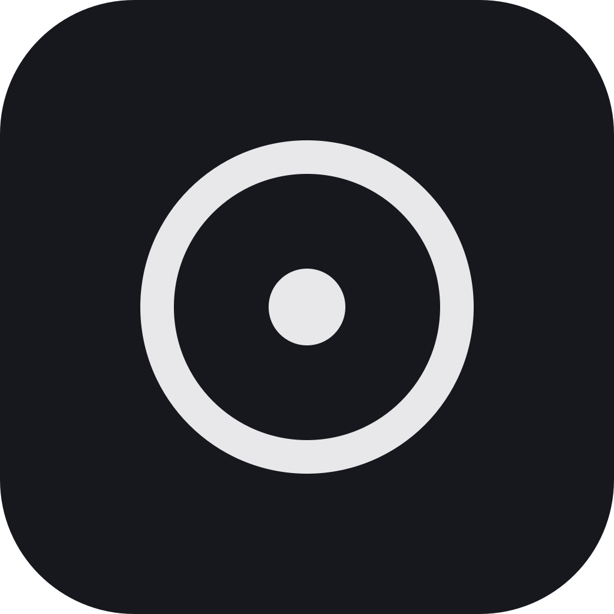

Six layouts, one click
Island, floating, auto-hide, classic tabs, a sidebar like Arc, or a bar at the bottom. Switch any time in settings.

Browser GitHubOne small window, your tabs where you want them, and no company reading over your shoulder. It updates itself, quietly.
Island, floating, auto-hide, classic tabs, a sidebar like Arc, or a bar at the bottom. Switch any time in settings.
It uses the engine your system already ships, so there is no second Chrome eating your memory. Idle tabs go to sleep.
New versions are signed and installed in the background. You get a dot on the gear, not a nagging window.
The whole thing is open source. History and settings stay on your own disk.